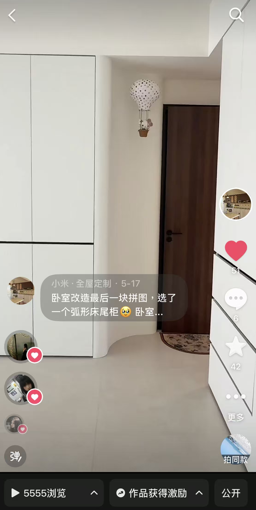
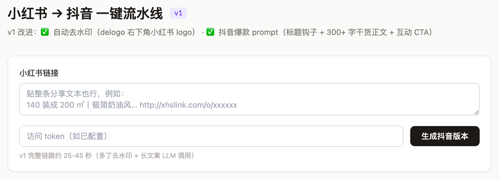
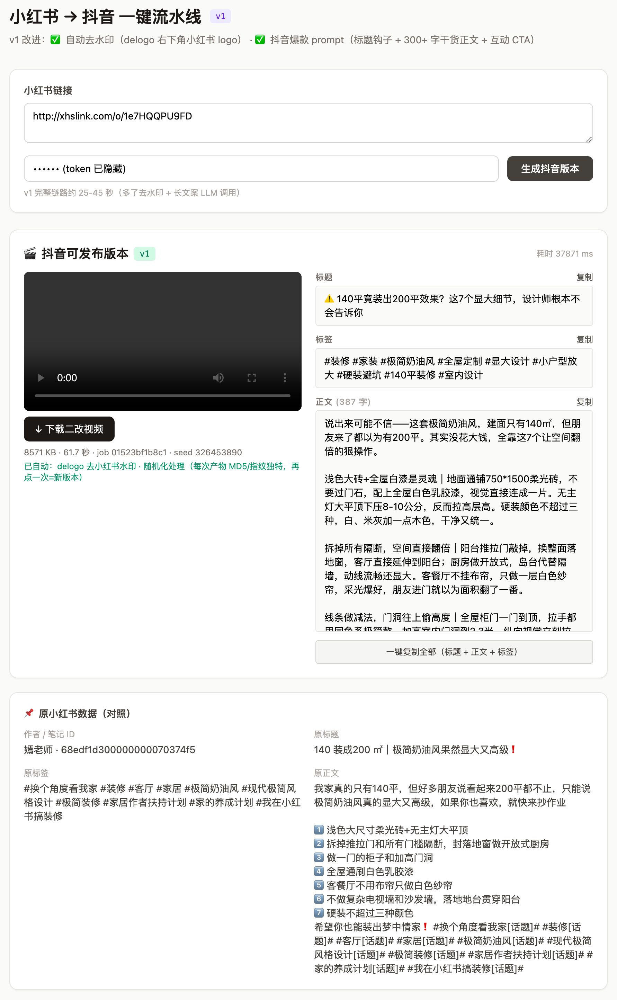

团队内部 · 内容生产链路 · 0→1 复盘
小红书 → 抖音 一键流水线
抖音不让你原样搬运,但没人拦你重新创作。
这条链路把小红书上已经被验证过的爆款,30 秒变成自己抖音号能发的视频——去水印、改指纹、重写文案,一个 PM 只剩两件事:贴链接、点上传。
第一条已经发出去了。但 1 条是 demo,批量化才是生意。下面是它怎么从 0 搭起来、第一条长什么样、卡在哪、接下来打哪。
第一条产出已上线
单条链路耗时30–45 秒
版本v1
PM 人工步骤2 步
Part 01 · 第一个产出
第一条真正发到客户号上的视频
流水线第一次在真实客户账号上端到端跑通,产出并发布的就是下面这条。它证明的不是"技术能跑"——实验室里早跑通了——而是整条链路真的能把一条小红书笔记,变成客户抖音号上一条能发、不被判搬运的视频。
卧室改造最后一块拼图,选了一个弧形床尾柜
@小米·全屋定制
客户全屋定制账号 · 卧室改造场景 · 发布于 5-17 · 作者 IP 云南

抖音成片 · @小米·全屋定制 · 卧室弧形床尾柜
↗ 抖音原视频
这条的成片文案 · 抖音爆款结构
同一条小红书笔记,流水线重写成下面这版抖音文案 —— 钩子标题 + 痛点共情 + ✅ 三点干货 + 升华 + 评论区 CTA + 分层标签,每一段都对着抖音算法的偏好写。
卧室改造最后一块拼图,选了一个弧形床尾柜 🥹
痛点
说实话当时有点犹豫——
方的好做、好搭、便宜
弧形要单独开模,造价高一点
但看到效果的那一刻,值了。
体验
直线条的空间里突然出现一个弧形
柔掉了整个卧室的棱角感
躺在床上看过去,特别舒服 👀
干货
弧形不只是好看——
✅ 床尾过道不会磕腿
✅ 视觉上让空间显大
✅ 收纳功能一点没少
升华
现在这个柜子是来家里朋友问得最多的一个单品 🔥
卧室想要有设计感,不一定要堆预算
有时候一个弧,就够了。
#弧形家具
#床尾柜
#卧室改造
#全屋定制
#现代简约风
评论区:从围观到留资
CTA 真的把人喊进了评论区。下面是这条视频底下的完整对话,客户账号(@小米·全屋定制)逐条接住,最后一句直接把围观者引向"发户型图给我看看"。
邓
邓小小 首评 江西
是不是这个博主的家,给了我灵感,我照着这个也做了个 🤭🤭🤭 (附自家户型图)
农
农民家小店 ▸ 邓小小 山东
我也要抄作业 那个圆弧花了多少钱呢 🤏
邓
邓小小 ▸ 农民家小店 江西
我这圆弧没另外花钱,是后期装修公司找木工给我加上去的。
小
小米·全屋定制 作者 云南
哇,你家这个弧度做的真不错,期待装完完整的效果哦～
小
小米·全屋定制 作者 ▸ 农民家小店 云南
对的,后期木工加就可以,想抄过去做也可以发户型图给我,帮你看看适合做大弧还是小弧 😊
↑ 留资动作 · 从围观变咨询
💬
比 51 个赞更重要的,是评论区转成了对话,而且转得很深。陌生人问"怎么做的""花了多少钱",客户账号不仅逐条接住,还顺势把围观接成咨询——"发户型图给我,帮你看看适合做大弧还是小弧"。一句话,从"看客"变"留资"。这正是 Akke「评论区获客」的入口:有稳定出片,评论区才有源源不断的高意向线索可捞。视频流水线是上游供给,Akke 是下游收割,两端是一条链。
🧪
这条之前,链路先在实测样例上验过: 一条「140 平装出 200 平既视感」的小红书奶油风笔记(作者 @嫣老师),流水线 39 秒跑出 720×960 / 62.2 秒 / 6.7MB 的二改视频 + 一段 345 字、4 段干货 + 评论区 CTA 的抖音文案。技术先在样例上跑通,再上客户号——这是 0→1 的两步。
第一条要证明的三件事,都成立了:视频能去掉小红书水印 + 改掉指纹不被判搬运;文案能从小红书味改成抖音算法偏好的爆款结构;PM 全程只动两下(贴链接、上传)。剩下的问题不在"能不能",而在"能不能规模化"——见 Part 3。
Part 02 · 0→1 搭建
从「搬运被限流」到一条 30 秒的流水线
起点是一个很朴素的痛:小红书上有大量被验证过的爆款,直接搬到抖音会被限流。抖音对原视频 + 原音频做 hash 指纹检测,对带小红书 logo 的画面做平台水印识别,文案风格还跟抖音算法对不上。0→1 做的事,就是把"绕过相似度检测 + 改成抖音文风"这套原本要人工折腾半天的活,压成一条 30 秒的自动链路。
这条链路长这样(结构图)
第一条成功之后,把整条流水线拆开看就是下面这张图。紫色框 = 云端自动化核心;每个二改 / 重写动作旁标了它绕开的坑(红色)。
① 输入 · PM
贴一条小红书链接
· 人工挑选选题
· 只支持视频笔记
· 发布 7–14 天内最稳(短链 TTL)
→
② 解析下载
解析链接 → 下载原视频
· 抽出原始视频流
· 交给二改引擎
▼
③ 二改引擎 · ffmpeg(Fly.io 云端)
画面 · delogo 去水印 + hflip 翻转
抹掉小红书 logo,水平翻转改画面 hash。
坑 · logo 被识别 / 画面 hash 被判搬运
音频 · 1.02× 音视频同步加速
setpts/atempo 同步变速,破音频指纹。
坑 · v0 只加速音频 → 音画异步 1.2s
规则:· 视觉听觉代价 ≈ 0 · 画面有大段文字时翻转会反读 → 这类笔记人工校对或跳过
ffmpeg · delogo / hflip / atempo
▼
④ 文案引擎 · LLM 抖音爆款 prompt
标题
数字反差 × 社会证明 × 悬念(≥2 种)
→
正文
痛点 → 干货 → 升华 → 评论区 CTA · ≥200 字 · 重试 2 次
→
坑:v0 套话「质感超赞,喜欢的赶紧收藏」38 字 → 完播差;结构化重写后完播 + 评论数量级提升
LLM 重写
▼
⑤ 交付 PM
下载二改视频 + 复制文案
· 视频预览 + 一键下载
· 标题 / 标签 / 正文一键复制
· 附原笔记对照供校对
→
⑥ 上传抖音
PM 手动发布
· 刻意保留人工终审
· 不做抖音直发(风控更稳)
▼ 下游承接
⑦ 下游 · Akke 获客
评论区高意向线索 → Akke 接成留资
稳定出片喂饱评论区,Akke 在下游把"问做法 / 报价"的人接成咨询 —— 上游供给 + 下游收割 = 一条链(见 Part 1 那条"发户型图"的留资动作)。
工具长这样
PM 看到的就一个页面:上面贴链接、点按钮,下面出二改视频 + 抖音文案 + 原笔记对照。

输入端 —— 贴一条小红书链接,点「生成抖音版本」(token 已隐藏)

产出端 —— 二改视频可直接预览下载,右侧是重写好的抖音标题 / 标签 / 345 字正文,底部摆原小红书笔记供人工校对
文案怎么设计的:标题 + 正文(真正的 know-how)
视频二改解决"能不能发",文案才决定"火不火"。抖音是算法分发,标题和正文不是写给人读的散文,是喂给算法的信号。流水线里这套「抖音爆款 prompt」把下面这些规则固化成 LLM 的硬约束,每条都能讲清楚好在哪。
① 标题:一句话里塞进 3 种钩子
数字反差 × 社会证明 × 悬念 —— 至少命中 2 种(LLM 硬约束)
实测标题
140 平装出 200 平既视感?这套极简奶油风,朋友来了都懵了
数字反差(140 → 200)社会证明(朋友都懵了)悬念(到底怎么做到的?)
- 抖音前 3 秒决定划走还是看完。标题必须在一句话里制造信息差,没钩子就没完播。
- 数字给确定感。"200 平既视感"比"显大"更有冲击 —— 可量化就可信。
- 社会证明借从众心理。"别人都懵了"暗示"这条值得看"。
- 悬念给完播动机。读者想知道"到底怎么做到的",自然看到最后。
② 正文:钩子 → 干货 → 升华 → 评论区 CTA
痛点钩子 → ✅ 三点干货(材料/做法) → 升华金句 → 评论区 CTA —— 正文 ≥ 200 字,不达标自动重试 2 次
上面 @小米 那条正文就是这个结构的实例:痛点(方 vs 弧的犹豫)→ 体验(柔掉棱角)→ 干货(✅ 不磕腿 / 显大 / 收纳)→ 升华(一个弧就够了)→ CTA(你家床尾怎么处理?)。
- 长文案喂算法关键词。≥ 200 字 = 更多语义锚点,完播 + 评论双拉,而不是 38 字一扫而过。
- 具体材料/做法建立专业可信。讲"无主灯 / 一门到顶 / 弧形开模",不是空夸"质感超赞"。
- ✅ 清单化降低阅读门槛。3 秒 get 三个价值点,适配抖音的快节奏。
- 结尾 CTA 把流量灌进评论区 —— 这正是 Akke 获客的入口(呼应 Part 1 那条"发户型图给我"的留资动作)。
两个刻意的取舍
⚠️
翻转是双刃剑。画面里有大段中文 / 品牌 logo / 屏幕截图时,水平翻转会让文字反向阅读。所以 delogo 只抹小红书平台固定水印,不碰创作者自己加的字幕——这类笔记必须人工校对或跳过。
🛠️
故意不做"抖音直发"。调抖音发布 API 风控风险高,留一道人工上传当最后审核反而更稳。这不是没做完,是主动画的边界。
技术栈(刻意做轻)
| 组件 | 选型 |
|---|
| 视频二改 | ffmpeg(delogo / hflip / setpts+atempo 同步变速) |
| 文案重写 | LLM + 抖音爆款 prompt(结构强制 + ≥200 字校验 + 重试) |
| 部署 | Fly.io · San Jose(美西)· 1GB volume(够装几百条)· 空闲自动休眠省成本 |
| 访问控制 | token 门禁(xhs-pipe-…),团队内部用 |
| 使用指南 | upio.ai/akke/xhs-to-douyin · 工具入口 xhs-pipe.fly.dev |
Part 03 · 批量化的问题
1 条能跑,N 条会卡在哪
第一条证明了链路成立,但"成立"和"成规模"是两件事。现在每多发一条,人工成本几乎线性增长,而且发得越多,平台风控的暴露面越大。规模化的瓶颈分两类:吞吐(人手不够快)和安全(发太多会被反噬)。
按"挡不挡得住放量"排了优先级,并标上当前进展。待开发 缓解中 设计保留 已固化
P1
BGM 指纹未解待开发
安全 · v1 没换 BGM,原视频若用小红书热门 BGM,量一大被音轨指纹识别的概率上升。
进展:v2 首位,计划做 10–30 首商用 BGM 随机替换(见 Part 4)。
P1
入口手动单条录入待开发
吞吐 · 没有批量录入,PM 一条链接一条地贴、等、下载,发 20 条 = 20 次人工往返。
进展:v2 计划 Lark Base + n8n 一次粘 20 条跑批落草稿池(见 Part 4)。
P2
每条都要人工 QA缓解中
人力 · 翻转可能让画面文字反读、LLM 偶尔事实漂移("奶油风"→"奶咖风"),校对成本随量线性增长。
进展:已用 ≥200 字校验 + 重试 2 次降低出错率,仍保留 1 次人工 quick scan。
P2
出口手动上传抖音设计保留
吞吐 · 每条要人工搬到手机抖音 App 上传、粘文案、发布,单条约 1–2 分钟。
进展:刻意不自动化(留人工终审更稳);靠批量录入 + 草稿池压缩前置时间,不做抖音直发。
P3
单号 ≤ 3 条 / 天运营遵守
安全 · 观察期单号一天 ≤ 3 条二改内容,账号数成了产能天花板。
进展:运营遵守中,验证无限流后再逐步放量。
P3
跨号复用 / 客户号审 / 原料 TTL已固化
安全·合规 · 同一视频不能投多号(跨号 hash 检测)、客户号上线需 Owner sign-off、小红书短链 7–14 天会失效。
进展:三条都已落成红线 / 流程约束,选题流程持续供给新鲜链接。
🧮
一句话算账:当前产能 ≈(账号数 × 3 条/天)且每条都压着「人工录入 + 人工上传 + 人工 QA」三道手工。要放大产量,要么堆人(线性、不划算),要么把这三道手工自动化掉——后者就是 Part 4。
Part 04 · 下一步
把卡点逐个拆掉:v2 路线图
下一步的排序逻辑很直接:先补会被限流的安全缺口,再砍掉吃人力的手工环节。能放大产量的,优先级最高;工程量大、收益不确定的,往后排。下面每项都标了预估工期 —— 工期为粗估,待 Owner 按实际排期确认 —— 并附一条 AI 自评:这件事能不能让 AI 自己自主探索、跑出 MVP。
P1
BGM 替换
准备 10–30 首抖音商用 BGM 素材库,自动随机替换原音轨,关掉目前最大的指纹缺口。
为什么先做:这是规模化时最可能被反噬的点,堵住它才敢放量。
预估工期 · 3–5 天(素材库 + 随机替换逻辑)
AI 自动探索 高(机制)/ 需人(选曲) —— AI 能自主把 ffmpeg 换轨 + 随机选轨的骨架跑通、自测;但商用 BGM 的版权与调性筛选要人定,留一个素材入口给人工就行。
P1
批量录入
Lark Base 表 + n8n 编排,PM 一次粘 20 条链接自动跑批,结果落"草稿池"。
为什么先做:直接砍掉吞吐瓶颈的入口,人力从线性变常数。
预估工期 · 1–2 周(Lark Base + n8n 编排 + 草稿池)
AI 自动探索 高 —— 表结构 + n8n 编排 + 批量驱动都是明确规格 + 现成 API,AI 可自主搭出能跑的 MVP,人工只校验产出落点与限流节奏。
P2
客户品牌水印
右下角加客户品牌 logo(每个客户传一次素材,复用 v1 delogo 抹完的位置)。
为什么:从"能发"升级到"能为客户做品牌沉淀",提客单价。
预估工期 · 2–3 天(复用 delogo 区域贴 logo)
AI 自动探索 高 —— 在 delogo 抹完的固定区域叠 logo 是确定的 ffmpeg 变换,AI 可独立实现 + 自测;每客户素材一次性人工上传即可。
P3
图文笔记支持
抽图 + Wan2.2 I2V 生视频 + TTS 配音,把图文笔记也纳入选题池。
为什么往后排:工程量大一档,先看视频笔记的供给够不够用。
预估工期 · 2–3 周(抽图 + Wan2.2 I2V + TTS,工程量大)
AI 自动探索 中 —— 抽帧 + Wan2.2 I2V + TTS 串联 AI 能自主搭原型,但生成视频的自然度 / 质量需人工评估把关,属"AI 先探、人定标准"。
不做
抖音直发 API
暂不做。账号风控风险高,保留人工最后一道审核更稳——这是边界,不是 backlog。
出口的"自动化"靠批量录入 + 草稿池缩短,而不是直发。
AI 自动探索 不适用 —— 这是主动画的边界,不是待办;AI 不应绕过这道人工终审。
Part 05 · 远期蓝图
更远处:还没排期的大功能
下面是这条内容生产线再往后的大方向 —— 都还在构想阶段,未进入开发、也未排期。先把方向占个位,具体优先级和工期等 v2 落地后再议。
★ 数字人 / 虚拟出镜形象
把二改视频与 AI 生成的帅哥靓女出镜形象结合,做口播 / 品牌人设 / 真人感出镜 —— 从"搬运二改"升级到"自带形象的原生内容"。
构想 · 未排期
多平台一稿多投
一条内容自动适配抖音 / 视频号 / 快手,各平台格式与文案自适应,一次生产、多端分发。
构想 · 未排期
自动选题挖掘
从平台热榜 / 竞品 / 历史数据自动挖高潜选题,不再靠人工挑链接。
构想 · 未排期
数据回流闭环
发布后自动拉播放 / 互动数据,反哺选题与爆款 prompt 自我迭代。
构想 · 未排期
客户专属人设与风格库
每个客户一套语气 / 人设 / 视觉风格,产出带品牌一致性。
构想 · 未排期
评论区高意向自动接入 Akke
评论自动打意向标签,直接进 Akke 获客队列,彻底打通"出片 → 评论 → 留资"上下游。
构想 · 未排期
※ 本清单只列方向、不含承诺,后续可继续往里加。
Snapshot
系统快照
链路
步骤数4 步(解析 / 二改 / 文案 / 交付)
单条耗时39s 热启动 · 72s 冷启动
PM 人工2 步(贴链接 · 上传)
版本v1(去水印 + 爆款文案)
产出规格
视频720×960 · ~62s · ~6.7MB
二改delogo + hflip + 1.02× 同步变速
文案≥200 字 · 10 个分层标签
第一条@小米·全屋定制 · 5555 播放
部署
平台Fly.io · San Jose
存储1GB volume(几百条)
成本控制空闲自动休眠
访问token 门禁 · 内部用
规模化约束
单号日发≤ 3 条(观察期)
跨号复用禁止(hash 检测)
原料 TTL7–14 天
客户号需 Owner sign-off
复盘
四条可以带走的判断
1
别从 0 创作,从"已被验证的爆款"二次创作。
小红书帮我们筛过一遍内容,流水线做的是"搬运合规化",而不是赌新选题——风险和成本都低一个量级。
2
规避相似度检测,要同时打画面 + 音频 + 文案三个面。
v0 只动音频就翻车(还音画异步)。delogo + hflip + 同步变速 + 文风重写四件一起做,才真正降下被判搬运的概率。
3
第一条的价值是"证伪风险",不是"证明能跑"。
技术跑通早不稀奇;第一条上客户号,验的是"去水印够不够干净、文案够不够抖音味、PM 真的只用两步"——这才是 0→1 的分水岭。
4
demo 到生意,差的不是功能,是吞吐和安全。
能发一条不等于能发一千条。下一程的胜负手是 BGM 指纹(安全)+ 批量录入(吞吐),不是再加花哨的二改特效。